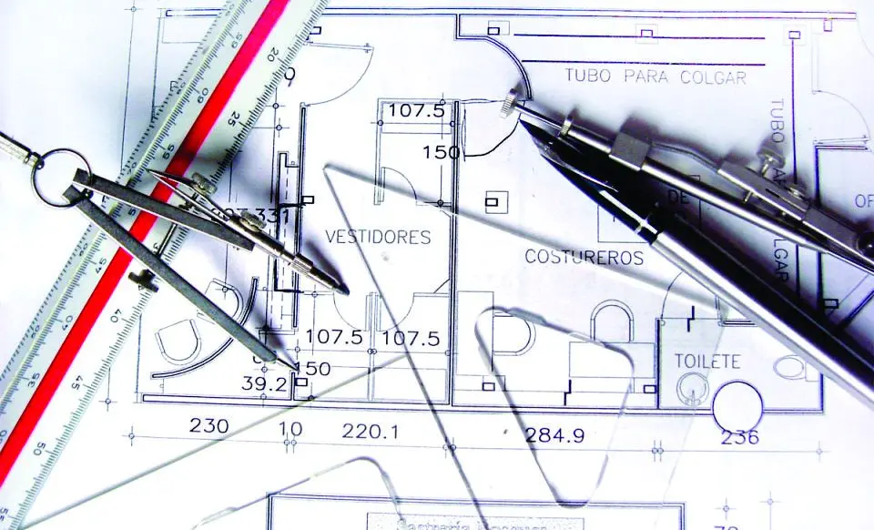

Aqui mostramos os principais estilos de desenho com o intuido de informar e almentar seus conhecimentos sobre o desenho.
Realismo
Os desenhos realistas, como o nome sugere, costumam transmitir a sensação de realidade no observador,
dando a impressão que a obra é, de fato, uma representação fotográfica. Isso acontece porque o desenho realista
é uma arte que visa reproduzir, da forma mais fiel possível, uma imagem real de pessoas ou objetos.
Mangá
O mangá é o nome dado as histótias japonesas, que são bastantes semelhantes as HQs(histórias em quadrinhos).
A palavra que dá nome aos quadrinhos asiáticos surgiu junto de dois vocabulários: man = involutário e gá = desenho/imagem.
Técnico
Desenho técnico é uma representação gráfica utilizada na arquitetura e outras áreas que apresenta características como cortes, vistas e escalas. Ela é normatizada pela ABNT(Associação Brasileira de normas Técnicas).
Cartoom
Cartum é um gênero jornalístico considerado opinativo ou analítico que crítica, satiriza e expo~e situações por meio do grafismo e humor.
Abrange, hoje, praticamente todos os veículos de difusão da informação gráfica: jornais, revistas e a internet.